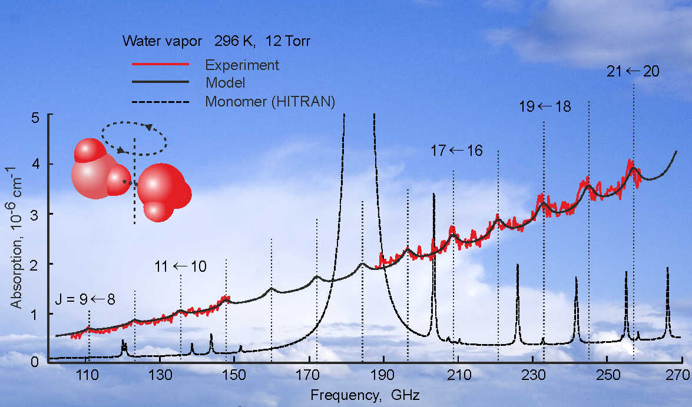
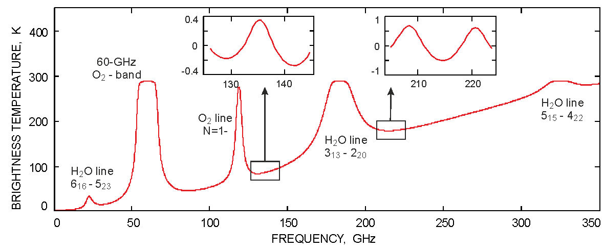

Instruments Resonator spectrometer Water dimer detection Resonator spectrometer Water dimer detection
Water dimer Detection |
|  |
Water dimers (H2O)2 are believed to affect the Earth’s radiation balance and climate, homogeneous condensation and atmospheric chemistry. Moreover, the pairwise interaction which binds the dimer appears to be of paramount importance for expounding a complete molecular description of the liquid and solid phases of water. However, there have been no secure, direct observations of water dimers at environmentally relevant temperatures despite decades of studies. |
This topic has even survived two previous false detections published, respectively, in Nature (Gebbie et al. 1969) and Science (K. Pfeilsticker et al. 2003). We succeeded in the first unambiguous observation of the resolved rotational dimer spectrum recorded in equilibrium water vapor at room temperature. The result was reported in Physical Review Letters [Ref. 4 (2013)] marked as an Editors' Suggestion. (See the related viewpoint of Prof. R.J. Saykally and articles in mass media)
In the continuation of this study the water vapor spectrum was investigated in the 190-260 GHz range containing six more intense rotational features of the dimer. The dimer spectrum was studied over a broad range of pressures and temperatures relevant to the Earth’s atmosphere. A number of spectroscopic and thermodynamic parameters of the dimer was determined. Signal to noise ratio of observed dimer features allowed us to make the second key step toward understanding the role of the dimer in atmospheric processes: spectra of water vapor diluted by air clearly demonstrate expectable pressure broadening of the dimer features without noticeable reduction of their integrated intensity. This suggests the conclusion that the dimer equilibrium constant in the atmosphere is about the same as in pure water vapor [Ref. 4 (2014)]. |
A simple analytical model of the water dimer millimeter-wave spectrum at pressures and temperatures typical of Earth's atmosphere is proposed [Ref. 2 (2014)]. We used the model for assessing atmospheric brightness temperature variations caused by the water dimer absorption. |
 |
The figure presents calculated spectrum of thermal emission of the atmosphere for the zenith observation, summer conditions. A possibility of direct radiometric observation of the dimer in the Earth's atmosphere is shown [Ref. 2 (2014)]. |
We are pleased to note that the important role of water dimer in the atmospheric absorption as well as the discrete character of its spectrum were for the first time clearly formulated by our colleagues from Alma Matter of our Institute - the Radiophysical Research Institute - Prof. S.A. Zhevakin and his PhD student A.A. Viktorova (see [Dokl. Akad. Nauk SSSR V.171, P.1061 (1966) and V.194. P.291 (1970)] and references therein for details. English translation of the original Russian-language papers can be found in the “Soviet physics – Doklady”).
See our review paper [Ref. 10 (2014)] for more details on the study and for the history of the warm dimer detection. |

{kind=link}